恰当的学习率选择会让你的学习算法运行得好得多。00:03
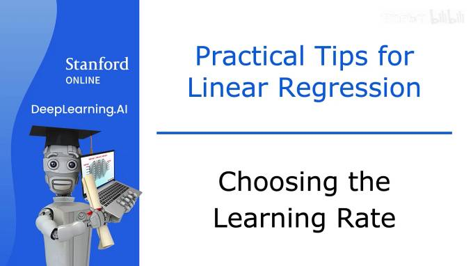
如果它太小，算法会跑得非常慢。00:08
而如果它太大，它甚至可能不会收敛。00:11
我们来看看如何为你的模型选择一个好的学习率。00:15
具体来说，如果你画出了一定迭代次数下的代价，并注意到代价有时上升有时下降，你应该将这视为梯度下降没有正常工作的明确信号。00:19
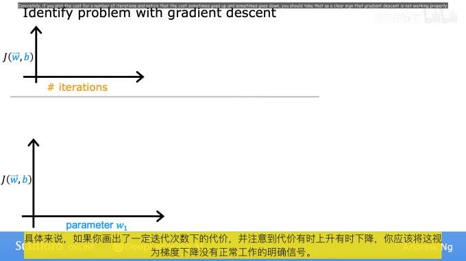
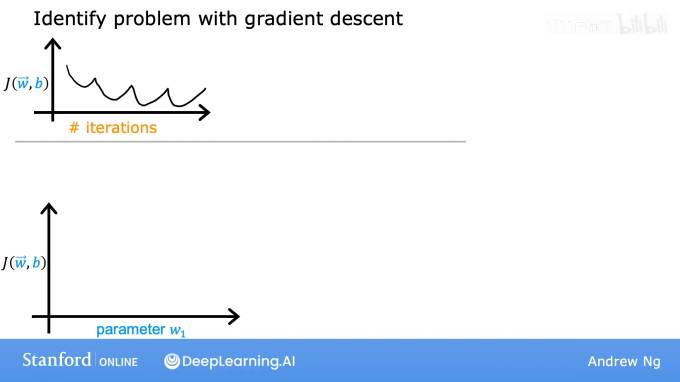
这可能意味着代码中有 bug，或者有时可能意味着你的学习率太大了。00:35
这里有一个图示说明可能发生的情况。00:41
这里，纵轴是代价函数 j，横轴代表某个参数，比如 w 一。00:45
如果学习率太大，那么如果你从这开始，你的更新步长可能会越过最小值，最终停在这里。00:56
而在下一步更新中，你又会再次越过，所以你最终停在这，以此类推。01:06
这就是为什么代价有时会上升而不是下降。01:14
要解决这个问题，你可以使用一个较小的学习率。01:19
这样，你的更新可能从这开始，下降一点点，再下降一点点，并有望持续下降，直到达到全局最小。01:24
有时你可能会看到代价在每次迭代后持续上升，就像这里的这条曲线。01:35
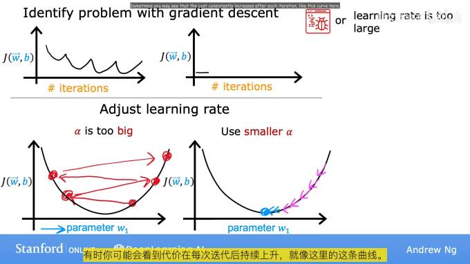
这也很可能是由于学习率太大，可以通过选择一个较小的学习率来解决。01:43
但像这样的学习率表现也可能预示着代码中可能存在的 bug。01:51
例如，如果我写的代码里 w 一的更新方式是 w 一加 alpha 乘以其导数项，这可能导致代价在每次迭代时持续增加。01:57
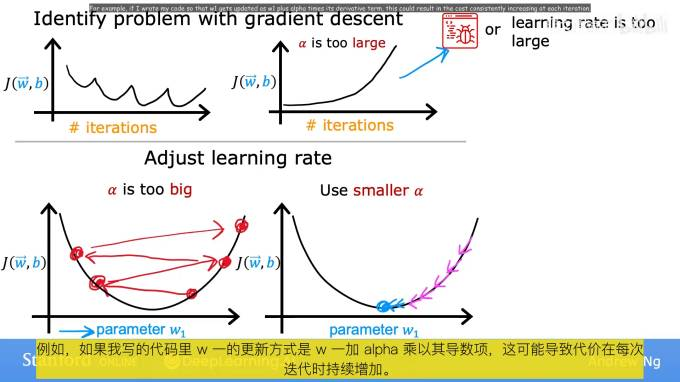
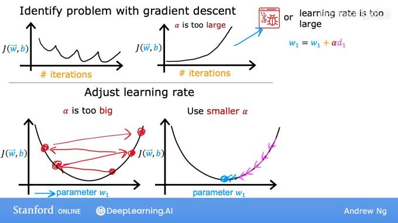
这是因为加上导数项会让你的代价离全局最小值越来越远，而不是越来越近。02:12
所以要记住，你想用的是减号，所以代码应该更新 w 一为 w 一减去 alpha 乘以导数项。02:20
对于正确实现梯度下降的一个调试技巧是，只要学习率足够小，代价函数就应该在每一次迭代中都下降。02:32
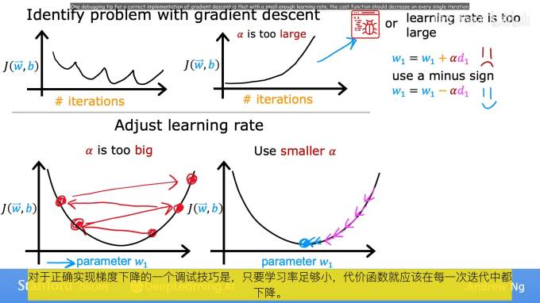
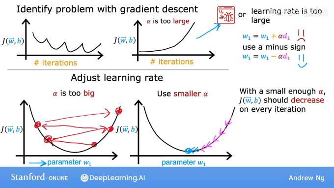
所以如果梯度下降不起作用，我常常会做的一件事，也希望你觉得这个技巧有用，我常常会做的一件事就是把 alpha 设成一个非常非常小的数字，看看这能否让代价在每次迭代中都下降。e。02:44
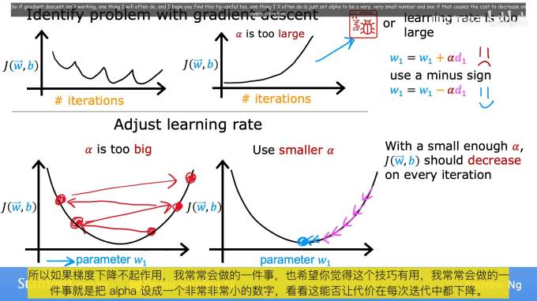
如果即使 alpha 设得非常小，代价 j 也没有在每一次迭代中都下降，反而有时上升，那么这通常意味着代码中的某个地方有 bug。03:02
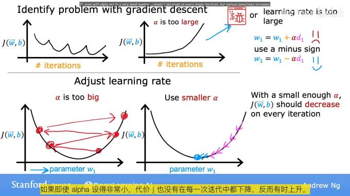
注意，把 alpha 设得极其小在这里是作为一个调试步骤来用的，而一个极其小的 alpha 值对于实际训练你的学习算法来说不会是最有效的选择。03:16
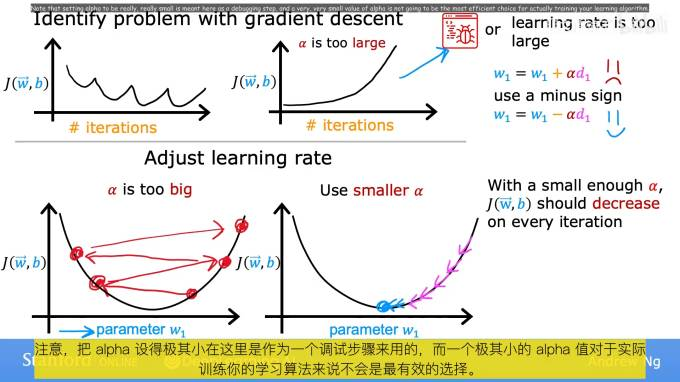
一个重要的权衡是，如果你的学习率太小，梯度下降就可能需要大量的迭代次数来收敛。03:29
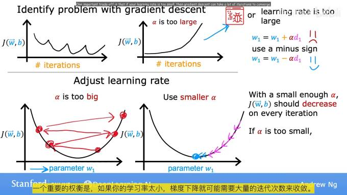
所以，当我运行梯度下降时，我通常会尝试一组不同的学习率 alpha 值。03:37
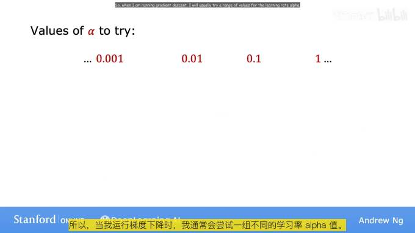
我可能会尝试从零点零零一的学习率开始，我也可能会尝试一个十倍大的学习率，比如零点零一和零点一，等等。03:44
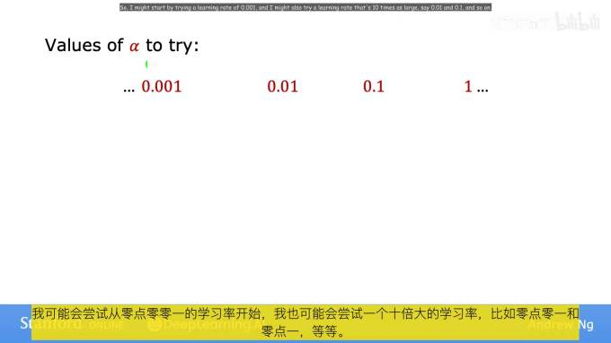
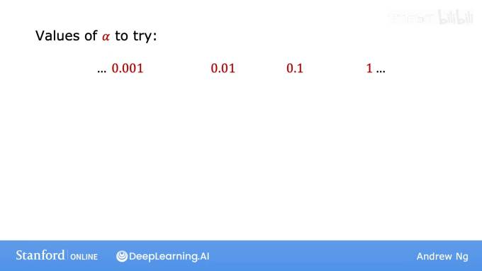
并且对于每个 alpha 的选择，你可能只运行梯度下降少量几次迭代，并画出代价函数 j 关于迭代次数的图像。03:56
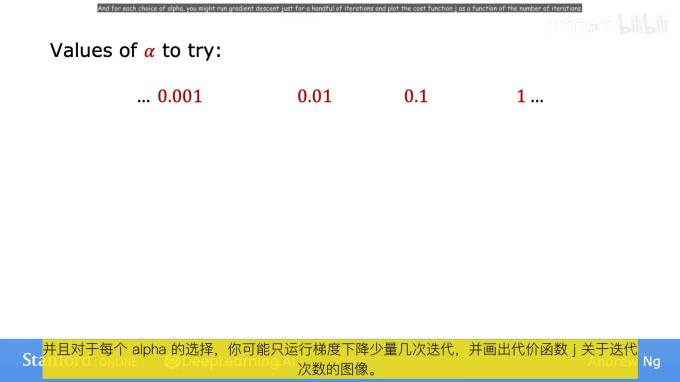
在尝试了几个不同的值之后，你可能就会挑出那个看起来能快速且能持续降低代价的 alpha 值。04:08
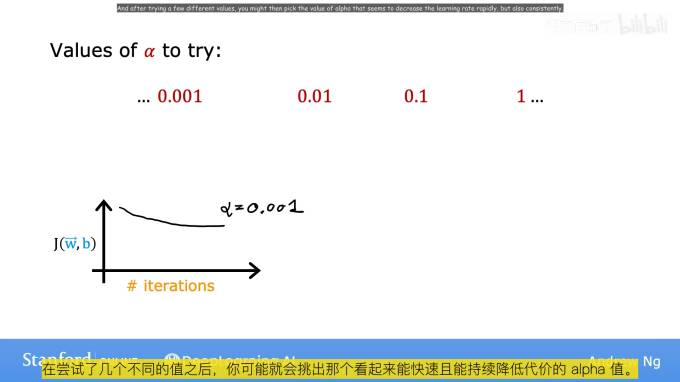
事实上，我实际做的是尝试像这样的一系列取值。04:18
在尝试了零点零零一之后，我会将学习率提高三倍到零点零零三，之后，我会尝试零点零一，这又大约是零点零零三的三倍大。04:24
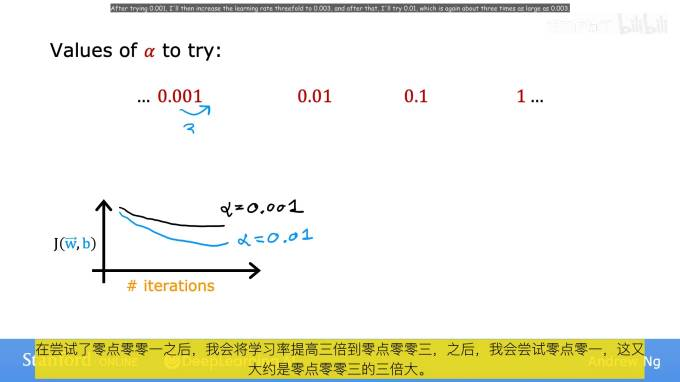
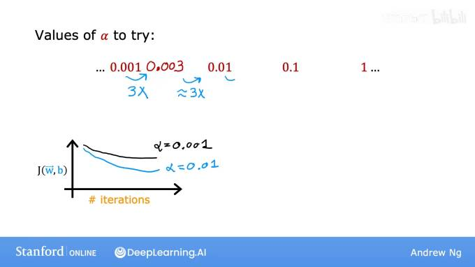
所以，这大致就是在尝试梯度下降时，让每个 alpha 值大约比前一个值大三倍。04:39
所以我将尝试一系列的值，直到我找到一个值它太小了，然后也确保我找到一个值它太大了。04:48
然后我会慢慢地尝试挑选最大的可能学习率，或者就是挑一个比我找到的最大合理值稍微小一点的。04:57
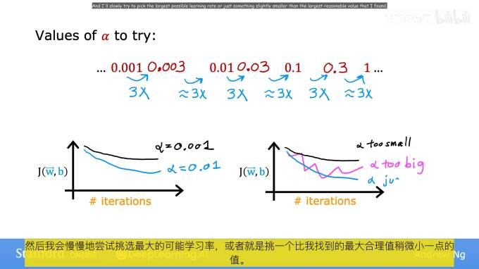
当我那样做时，通常能为我的模型找到一个好的学习率。05:07
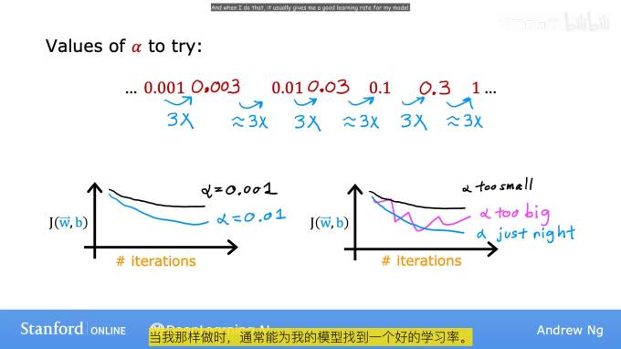
所以，我希望这个技巧对于你为梯度下降的实现选择一个好的学习率也会很有用。05:12
在接下来的选修实验中，你还可以看看特征缩放在代码中是如何完成的，也看看学习率 alpha 的不同选择如何导致你模型训练得更好或更差。05:25
我希望你享受调试 alpha 的值，并观察选择不同 alpha 值所带来的不同结果。05:36
所以，请看一看并运行选修实验中的代码，以获得关于特征缩放以及学习率 alpha 的更深的直观理解。05:44
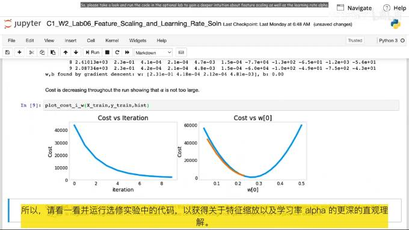
选择学习率是训练许多学习算法的关键一环，我希望这个视频能给你关于不同选择的直观感受，以及如何去挑选一个好的 alpha 值。05:55
现在，还有一些想法可以用来使多元线性回归更加强大，那就是选择自定义特征，这也将。06:07
允许你去拟合曲线，而不只是一条直线，到你的数据上。06:17
让我们在下一个视频中看看这一点。06:22